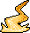
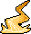

Como jogar
Elementaria e um jogo de cartas em que você assume o papel de um lorde elemental, lutando contra os seus inimigos pela glória.
Para isso você usara de magias, criaturas, construções, equipamentos etcs, representados pelas cartas contidas no seu baralho (Deck).
A essência do universo:
No começo de tudo, o universo era composto de um mar de essência, energia pura capaz de tudo fazer, ao passar de milénios a essência começou a se mutar dando origem aos elementos:
Fogo () Gelo () Natureza () Trevas () Luz ( ) Relâmpago ()
) Relâmpago ()
Essência ()
Dos elementos, tudo começou a se formar, planetas e estrelas, vida e morte, guerra e paz.
Entre os seres que surgiram, os chamados lordes elementais tinham o poder de controlar os elementos e a essência, apesar do grande poder esses seres também tinham grande ambição sempre lutando e competindo por suas causas.
Tipos de cartas:
Em Elementaria existem 4 tipos de cartas (Lordes Elementais, Relíquias, Criaturas e Mágicas) veremos mais sobre cada uma desses tipos de cartas e as suas regras.
Lordes Elementais
Seu lorde elemental e um ser de grande poder capaz de gerar essência para convocar criaturas e magias.
Antes de construir seu deck você deve selecionar um Lorde, pois será ele que definira em jogo os seus pontos de vida, geração de essência e quais elementos poderão ter as cartas no seu deck, tudo isso será explicado mais detalhadamente adiante, você so pode ter 1 Lorde em seu deck, e ele já começa no campo de jogo.
Para entender como funciona uma carta de Lorde usaremos de exemplo "Aldrich rei da noite eterna".
Relíquias
As relíquias são uma extensão dos poderes do seu lorde, quando for contruir o seu deck você escolhera 2 relíquias, uma relíquia sagrada () e uma relíquia profana ( ), elas assim como o seu lorde já começam no campo de batalha, as cartas de relíquias terão símbolos ao perto dos seus nomes que identificam se ela e uma relíquia profana () ou uma relíquia sagrada (), algumas terão ambos os símbolos o que significa que você pode por ela tanto na zona de relíquia profana tanto na zona de relíquia sagrada, lembrando você terá que ter uma relíquia profana e uma sagrada a menos que um efeito diga o contrário, além disso, as relíquias que escolher também tem que ser do mesmo elemento da afinidade elemental do seu Lorde.
), elas assim como o seu lorde já começam no campo de batalha, as cartas de relíquias terão símbolos ao perto dos seus nomes que identificam se ela e uma relíquia profana () ou uma relíquia sagrada (), algumas terão ambos os símbolos o que significa que você pode por ela tanto na zona de relíquia profana tanto na zona de relíquia sagrada, lembrando você terá que ter uma relíquia profana e uma sagrada a menos que um efeito diga o contrário, além disso, as relíquias que escolher também tem que ser do mesmo elemento da afinidade elemental do seu Lorde.
As cartas de relíquias são classificadas de duas maneiras, relíquias construidas, relíquias mágicas:
As relíquias construidas podem ser alvos de ataques assim como as suas criaturas e o seu lorde, e quando destruídas são enviadas para o esquecimento, além disso, ela não recupera () no final do turno, apesar disso elas não são consideradas cartas de criaturas, então não são afetadas por efeitos que afetam criaturas.
As relíquias magicas, não podem ser alvo de ataque, além disso, elas não são consideradas cartas mágicas então não são afetadas por efeitos que afetam cartas mágicas.
Vamos entender melhor ambos os tipos de relíquias, e também as relíquias singulares (Que são somente profana ou somente sagrada) e as relíquias duplas (Que podem ser ou profanas ou sagradas a sua escolha).
Para entender as relíquias mágicas, vamos usar de exemplo "Lâmina sangrenta":
Para entender as relíquias construidas, vamos usar de exemplo "Pedra rúnica":
Criaturas
As criaturas lutaram por você quando convocadas, elas serão a sua principal fonte de dano para vencer os seus oponentes. As cartas de criatura normalmente so podem ser jogadas durante seu turno, durante a sua fase principal ou pós-combate.
Para entender melhor uma carta de criatura vamos usar como exemplo "Abelha gigante relampejante".

Mágicas
As cartas mágicas representam efeitos que são ativos ao serem jogadas, pagando o seu custo e cumprindo o necessário para o efeito da mágica, por exemplo:
Se uma carta mágica diz que você escolhe uma criatura em campo, precisa haver pelo menos uma criatura em campo para você poder jogar essa mágica, normalmente as cartas mágicas só podem ser usadas durante o seu turno, durante a sua fase principal ou pós-combate, normalmente depois que os efeitos descritos na carta são resolvidos a carta e enviada para o "esquecimento" que um termo de jogo que representa monte de descarte.
Termos de jogo:
Agora que você já conhece um pouco sobre as cartas, vamos entender os conceitos básicos do jogo.
Deck:
O seu deck contem as cartas que você ira usar para jogar, no começo da partida você embaralha o seu deck e o coloca voltado para baixo, cada jogador na mesa tera o seu próprio baralho, algumas cartas e efeitos permitem que um jogador olhe as cartas no seu deck, peguem cartas para adicionar a mão ou jogar em campo, ou jogue cartas do topo do deck para o esquecimento, se uma carta não diz que você embaralha o deck após interagir com ele, então você não embaralha, você também não embaralha o deck quando compra cartas dele, comprar uma carta
significa que você pega uma ou mais "dependendo de quantas cartas você comprar" cartas do topo do seu deck e
adiciona a sua Mão.
Seu deck tera 50 cartas a sua escolha que sejam da afinidade elemental de seu lorde, além dessas cartas você tera 2 relíquias uma profana e uma sagrade e sua carta de Lorde.
Mão:
Quando você compra cartas elas vão para a sua mão, somente você pode ver as cartas da sua mão (a menos que um efeito diga o contrário), cada jogador tera a sua própria mão de jogo contendo as cartas deles, além disso no final do seu turno se você tiver mais de 6 cartas na sua mão você deve descartar cartas até ficar com 6.
Esquecimento:
O esquecimento e uma pilha para aonde as suas cartas que foram "Descartadas, Destruídas, Sacrificadas ou Anuladas" as suas mágicas que foram resolvidas ou as suas criaturas que perderam todos os pontos de vida sendo assim destruídasem combate. As cartas no seu esquecimento ficam empilhadas uma em cima da outra com a face para cima e qualquer jogador pode ver as cartas no esquecimento. Cada jogador tem o seu próprio esquecimento.
Campo de jogo:
O campo de jogo e aonde as suas cartas são colocadas, entenda que Elementaria não tem um tabuleiro especifico então você pode organizar as suas cartas como melhor desejar, recomendamos usar um modelo similar a esse:
Remover do jogo:
Cartas removidas do jogo vão para uma pilha de remoção, e similar ao esquecimento porem a carta vai com a face para baixo além disso, diferente do esquecimento, pouquíssimas cartas fazem interação com a pilha de removidas, o mais comum e que as cartas que são removidas do jogo não serão mais usadas durante essa partida.
Resolução:
A pilha de resolução e um local para aonde vão às cartas quando mais de uma carta e ativa ao mesmo tempo, isso acontece quando cartas com a palavra-chave ou são ativas em resposta a uma jogada de outro jogador, por exemplo, quando um oponente ativa o efeito de uma criatura, você pode ter uma carta para anular esse efeito ou quem sabe apenas destruir a criatura, nesse caso a pilha de resolução e criada, os efeitos se resolvem sempre do último efeito a ser ativo até o primeiro, nesse caso, a carta que você jogou em resposta se resolve anulando ou destruindo a criatura e depois o efeito da criatura do seu oponente se resolveria, note também que destruir uma carta não e o mesmo que anular o seu efeito, se você destrói uma carta do seu oponente depois que ele já ativou o efeito, a pilha de resolução e feita e o efeito da carta do oponente se resolve normalmente depois da sua.
Não existe um limite de cartas que podem ser usadas em resposta uma as outras, basta seguir a ordem de resolução da ultima até a primeira.
Anular vs Ativar efeito vs Perder alvo:
E importante enteder a diferença entre anular poder ou não ativar e deixar o campo para a pilha de resolução.
E importante entender a diferença entre anular poder ou não ativar e deixar o campo para a pilha de resolução.
Entendendo anular:
Anular uma carta que está em jogo e que não está em jogo são coisas diferentes, quando você ativa um efeito que anula uma carta que esta sendo jogada, independente se ela esta sendo jogada da mão ou esquecimento, ou deck, e como se a carta que iria ser jogada, nunca tivesse entrado em jogo, o que significa que nenhum efeito relacionado a entrar em jogo de nenhuma carta e ativo pela
carta que foi anulada, quando uma carta e anulada antes de estar em campo ela vai para o
esquecimento, note que isso não considera que a carta foi destruída afinal ela nunca foi jogada
o que significa que efeitos como "Desejo" que se ativam quando cartas são destruídas, não irão
ativar em cartas anuladas.
Quando você anula um efeito de uma carta que já está em jogo, a carta permanece no campo a menos
que a carta usada para anular diga o contrário, note que se a carta dizer que anula o efeito e destrói
nesse caso a criatura já estava em jogo então efeitos como "Desejo" funcionariam normalmente.
Entendendo ativar efeito:
Algumas cartas podem ativar os seus efeitos, se ela não tiver a palavra chave "Rápido" o efeito só pode ser ativo nas fases principal e pós-combate, se uma carta tem o efeito de proibir que outras cartas ativem os seus efeitos, como por exemplo a palavra chave "Atordoar" que diz que uma criatura não pode atacar ou ativar seus efeitos, a ordem em que os efeitos foram ativos muda como irão funcionar, Por exemplo:
E importante entender a ordem em que os efeitos se resolvem para tirar o potencial máximo das cartas.
Note também que alguns efeitos como "Reflexo" são passivos o que significa que eles não são ativados ou seja, eles irão funcionar mesmo que a criatura não possa ativar os seus efeitos.
Entendendo Perder alvo: